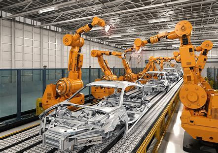

Robots in the Work Force
Robots are an essential in the work force.
Humans can not do the same task over and over again without messing up atleast once.
Robots can also work faster and more efficiently then humans as they do not need to worry about their working conditions and going on breaks. They can work 24/7 with little human input.

Robots can also do more precise work on little objects